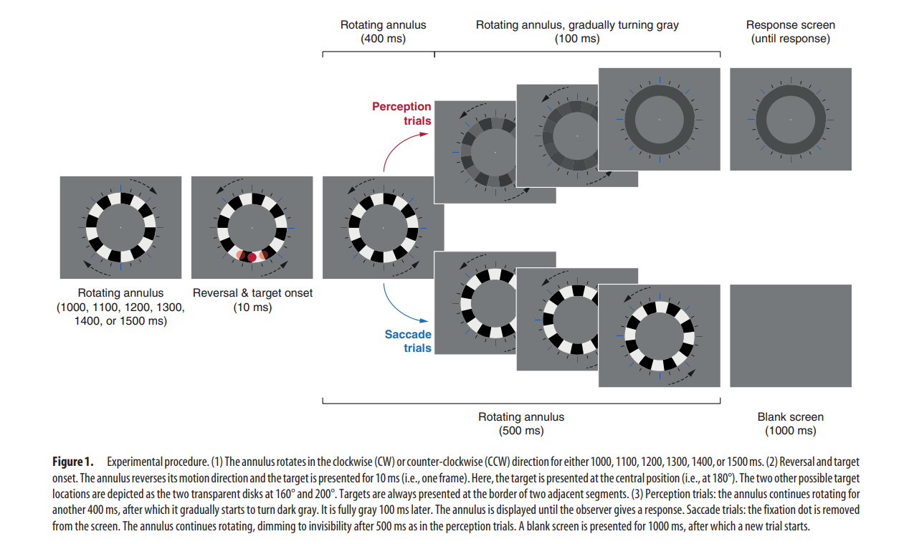

Materials and Methods
Stimuli
- Annulus with 16 alternating black (0.34 cd/m²) and white (309 cd/m²) segments had an inner
radius of 8.5° and an outer radius of 12.5° presented on a gray background with fixation dot in the
center with a diameter of 0.46°.
- Rotation: Annulus rotated at an angular velocity of 200°/s
- Reversal: After 1000, 1100, 1200, 1300, 1400, or 1500 ms, the motion direction of the annulus reversed.
- Target: Red disk (62.6 cd/m²) presented for 10 ms, 10.5° from fixation at 160, 180, or 200 degrees
of polar angle offset from the top of the annulus always presented at the border between two segments with equal probability that the right segment
was black or white.
- Reference Lines: Eight blue lines (6.1 cd/m²; width: 0.23°, height: 2.3°) drawn around the annulus at different polar offsets (0, 45, 90, 135, 180, 225, 270, and 315 degrees from the top of the annulus), Two smaller black lines (width: 0.19°, height: 1.37°) presented between every two blue lines.
- Experiment consisted of 35 blocks, categorized into two types: Perception blocks and Saccade blocks.
- Perception Blocks: 20 blocks with 120 trials each. After each trial, observers used a computer mouse to indicate the
perceived position of the target, with the annulus gradually turning gray to avoid distraction.
Observers could move the mouse as soon as the annulus turned fully gray. They had unlimited time to
respond, and a new trial started immediately after a response.
- If the target was not perceived, observers clicked at the location of the fixation dot.
- Saccade Blocks: 15 blocks with 160 trials each. Observers were asked to make an eye movement (saccade) towards
the target. The fixation dot disappeared at the time of reversal, and all stimuli disappeared from the screen 500 ms
after reversal.
The screen remained blank for 1000 ms before a new trial started in Saccade blocks.